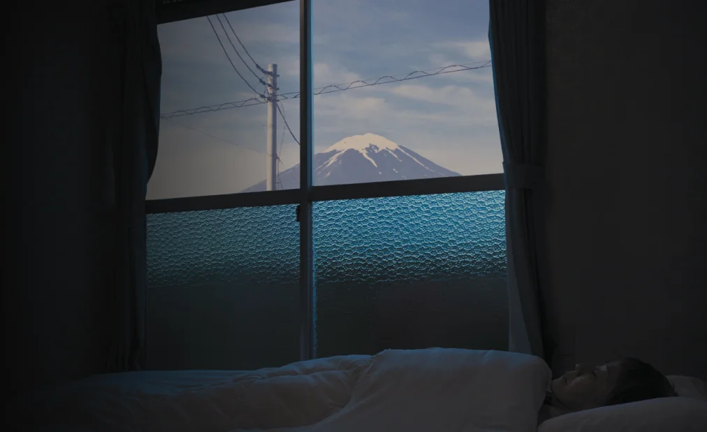
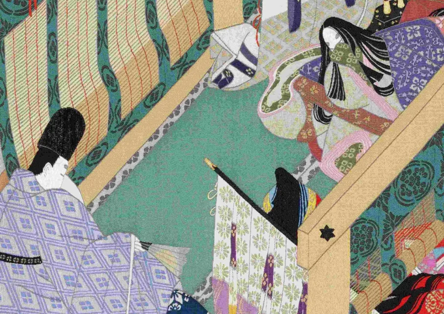
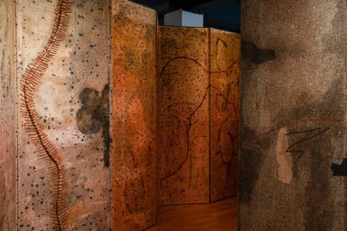

Portrait éphémère du Japon
Prolongeant un travail photographique anthropologique et social initié en 2016 à Cuba et qu’il poursuivra en 2024 en Israël, Pierre-Elie de Pibrac (né en 1983) a sillonné le Japon entre décembre 2019 et août 2020 pour réaliser la série Hakanai Sonzai (« je me sens moi-même une créature éphémère »).

À la cour du Prince Genji
Célèbre pour le raffinement extrême de son art de cour, le Japon impérial de l’époque de Heian (794-1185) a notamment donné naissance à une œuvre majeure de la littérature classique japonaise, le Dit du Genji. Écrit au 11e siècle par une femme, la poétesse Murasaki Shikibu, il a généré depuis mille ans une iconographie extrêmement riche, influençant jusqu’aux mangaka contemporains.

Carte blanche à Manish Pushkale
Créée par l’artiste indien à l’invitation du musée Guimet, l’œuvre s’inspire d’une histoire réelle : celle de l’extinction du langage aka-bo parlé par la tribu Bo sur l’archipel d’Andaman (Inde), également appelé « chant des oiseaux ». Conçue comme un voyage initiatique où se mêlent l’écriture, l’archéologie et la sensation fugace du souvenir.
Voyage en cinéma tadjik !
Du 27 octobre au 5 novembre, le Tadjikistan est à l’honneur au musée Guimet avec une rétrospective qui éclaire le parcours cinématographique du Tadjikistan, de l’époque soviétique à la renaissance post-guerre civile, illustrant un siècle de transformations sociales et artistiques.